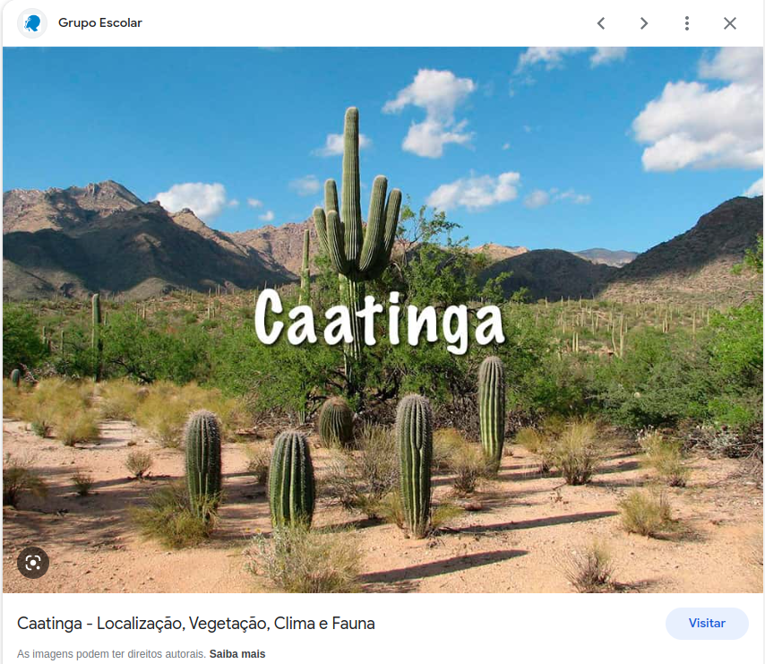

A colonização estética da Caatinga
By Felipe Melo
January 3, 2023
Faça esse exercício se nunca esteve nesse que é o único bioma exclusivamente brasileiro. Pense na natureza da Caatinga… Cactos, né? Acontece que a Caatinga não é o único ecossistema americano que possui cactos em abundância. Há zonas semiáridas e desérticas na América do Sul, Central e do Norte, repletos de cactos. As plantas da família Cactaceae são (quase) exclusivas das Américas, E são de uma beleza plástica incrível, como se vê na imagem abaixo.

A Caatinga possui cerca de 100 espécies de cactos, alguns endêmicos. São talvez o elemento da flora que mais representa a Caatinga, junto com um sol, a terra seca rachada e uma caveira de vaca. Acontece que essa estereotipação da Caatinga, associada sempre à pobreza vem também acompanhada de uma colonização iconográfica sobre os cactos. A maioria dos brasileiros conhece pouco ou nada a Caatinga e muitos são incapazes de distinguir através de fotos a Caatinga do Deserto de Sonora, por exemplo. Ao escrever a palavra “Caatinga” no google imagens, várias imagens do deserto de sonora e seus catos colunares aparecem em meio às imagens de mandacarus, facheiros e coroas-de-frade.

No exemplo acima, um site escolar usa equivocadamente uma paisagem dos desertos da América do Norte como se fosse a Caatinga. Outro exemplo grave é a própria secretaria de meio-ambiente do estado do Pernambuco, que na ficha fornecida ao WikiParques sobre uma de suas unidades de conservação estadual, a Mata da Pimenteira, usa não uma mas duas imagens de outros sistemas semiáridos, provavelmente da América do Norte.

Mata da Pimentira (sic) no Wikiparques
É interessante notar uma certa predileção pelas mesmas imagens. Veja a sequência abaixo com variações da mesma foto em diferentes artes comemorativas ao dia da Caatinga
clique aqui para ver as imagens
Infelizmente, a Caatinga no imaginário de muitas pessoas é uma zona semiárida da América do Norte. A desvalorização estética da Caatinga atinge os próprios caatingueiros. Quem já andou pelas cidades do sertão vai se dar conta que a arborização urbana é hoje dominada por neem ou “ninho”, uma árvore exótica asiática.
Enquanto isso a Caatinga vai lutando para ser reconhecida até na sua beleza estética e tem gente fazendo um bom trabalho com isso. Na UNIVASF, o Núcleo de Ecologia e Monitoramento Ambiental - NEMA tem um trabalho interessante de valorização estética da Caatinga. Quem chega lá dá de cara logo com um bonito jardim xerófito (com plantas de ambientes secos).

O menos conhecido dos biomas brasileiros precisa se livrar de muitos estereótipos sociais e ambientais. A bioeconomia, celebrada como parte das estratégias de desenvolvimento sustentável, pode contar com a valorização estética dos elementos botânicos da Caatinga.
PS: escrevi esse texto depois de cansar de ver promoções sobre a Caatinga com as fotos dos desertos do Norte. São lindos esses desertos e seus cactos, mas nossa Caatinga também é linda.
- Posted on:
- January 3, 2023
- Length:
- 3 minute read, 470 words
- See Also: